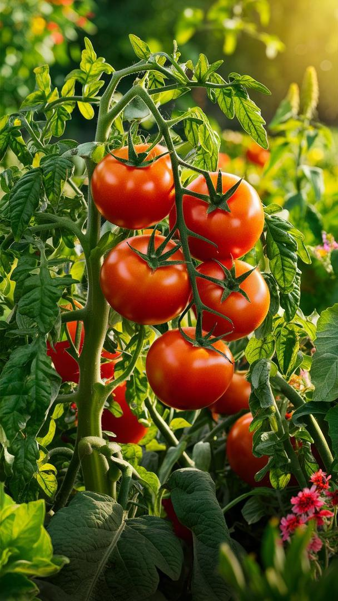

La tomate La tomate est un légume-fruit très apprécié pour sa saveur et sa richesse en vitamines. Elle pousse dans un climat chaud et ensoleillé, sur un sol fertile et bien drainé. Un arrosage régulier et un bon entretien permettent d’obtenir une récolte abondante. Les tomates sont généralement prêtes à être récoltées entre 70 et 100 jours après le semis. Elles se consomment fraîches, en salade, en sauce, en jus ou dans de nombreuses recettes, tout en apportant de nombreux bienfaits pour la santé grâce à leur richesse en vitamines et en antioxydants.